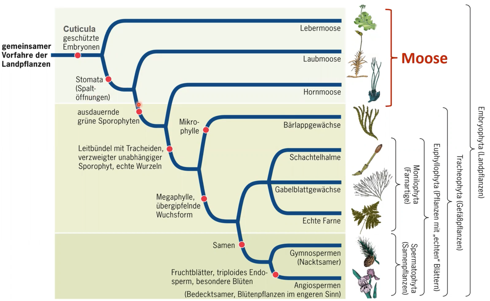
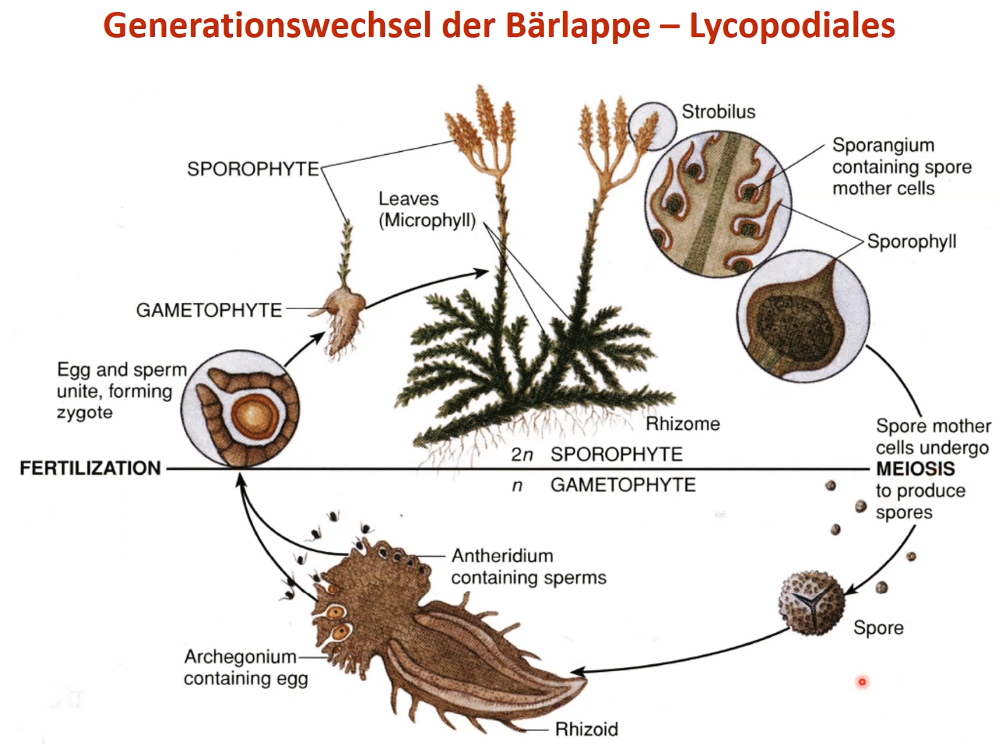
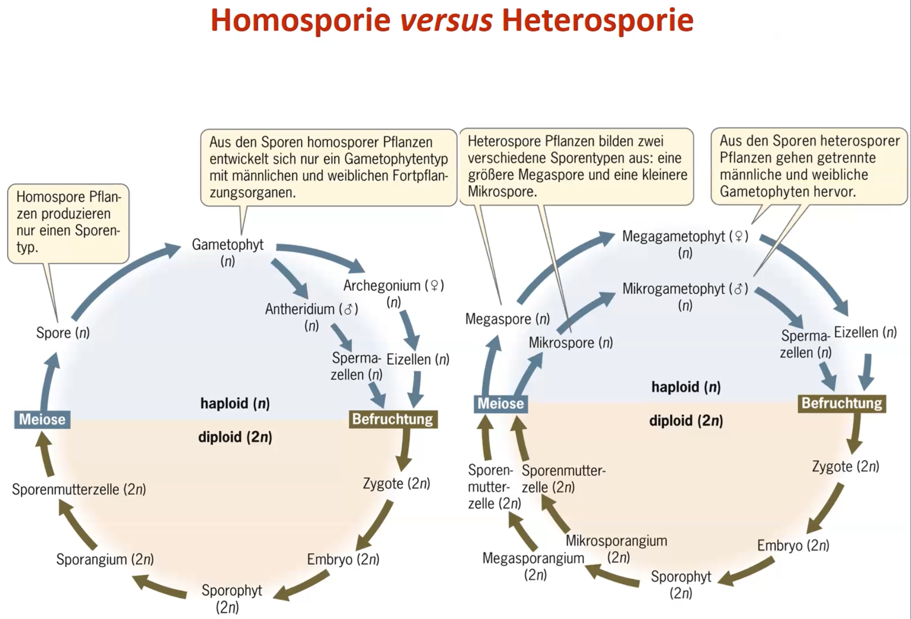

Pflanzen sind Organsismen, die neben echten Zellkernen auch Plastiden (meist Chloroplasten) als Organellen enthalten. Pflanzen sind (allermeistens) photoautotroph.
Definition Pilze
Pilze sind heterotroph wie Tiere und ernähren sich von totem organischem Gewebe, parasitär oder mutualistisch. Pilze sind jedoch sessil und weisen Zellwände (aus Chitin oft) und Vakuolen auf, haben jedoch eben keine Plastiden.
Definition Ökologie
Wissenschaftliche Untersuchung der Beziehungen zwischen Lebewesen und ihrer Umwelt.
Interaktionen zwischen Individuen mit der abiotischen Umwelt
Interaktionen zwischen Individuen der gleichen Art oder verschiedenen Arten
Häufigkeit und Verbreitung von Populationen, Arten, Lebensgemeinschaften
Stoff- und Energiehaushalt von Biosphäre, Ökosystemen, Populationen und Individuen.
Hierarchie biologischer Systeme:
Biosphäre
Biome
Ökosysteme
Lebensgemeinschaft
Population
Organismus
Geschichte des Lebens
ca. 4.8 mya Entstehung der Erde
ca. 3.8 mya Entstehung von Prokaryoten
ca. 2.8 mya Atmosphärischer Sauerstoff (Grosse Sauerstoffkatastrophe)
ca. 2.1 mya einzellige Eukaryoten
ca. 1.5 mya mehrzellige Eukaryten
ca. 0.7 mya Tiere
ca. 0.5 mya Kolonialisierung des Lande
Die Reiche der Biologie
Carl Woese definierte drei Domänen und sechs Reiche der Lebewesen. Eine einprägsame aber falsche Klassifikation. In realität sind vor Allem die basalen Gruppen viel sehr fragmentiert und nicht einfach zuzuordnen. Die Systematik Vorlesung befasst sich genauer mit diesem Thema.
Leben nach Woese:
Prokaryoten
Bacteria
Archaea
Eukaryoten
Protisten
Plantae
Fungi
Animalia
Endosymbiontentheorie
Erklärung für das Aufkommen von Eukaryoten.
Prokarytische Zelle, die ein Bakterium als Mitochondrium verschluckt gilt als Vorläufer der heterotrophen, tierischen Zellen
Prokarytische Zelle, die ein Cyanobakterium als Chloroplast verschluckt, gilt als Vorläufer von autotrophen, pflanzlichen Zellen
Einige unterstützende Argumente zur Endosymbiontentheorie:
Mitochondrien und Chloroplasten besitzen DNA, die ähnlich ist zu jener der Bakterien
Sie sind ähnlich gross und reproduzieren sich durch binäre Zweiteilung wie Prokaryoten
Das Membran-Lipid Cardiolipin kommt ausschliesslich in der inneren Mitochondrienmembran und in Bakterienmembranen vor.
Einige Transportproteine (Porine) kommen in Bakterien, Mitochondrien und Chloroplasten vor.
Genomvergleiche zeigen auf grosse Ähnlichkeit zwischen Mitochondrien und Bakterien, bzw. zwischen Chloroplasten und Cyanobakterien.
Interne Struktur der Plastiden (Thylakoide und Chlorophyll) ist sehr ähnlich zu jener von Cyanobakterien.
Ribosomen in Mitochondrien und Chloroplasten sind ähnlicher zu jenen in Bakterien als jene in Eukaryoten.
Chloroplasten finden sich in verschiedenen Protisten, die nah verwandt sind mit Plastiden-freien Arten -> Wenn Plastiden mehrmals unabhängig entstanden sind, ist ihre grosse Ähnlichkeit schwierig zu erklären.
Wichtige Schritte der Evolution
Kernphasenwechsel
Generationswehchsel
Reproduktion
sexuell
vegetativ
Evolution der Geschlechter
Isogamie
Anisogamie
Oogamie
Diözie
Monözie
Hermaphroditismus
Mehrzelligkeit und Zelldifferenzierung
Vielfalt der Lebenszyklen
Evolution und Systematik
Eigenschaften des Lebens
Evolution und Artbildung
Systematik
Definition Systematik
Taxonomie
Phylogenetik
phylogenetische Stammbäume
Para
Poly
Mono
phylogenetisches jargon
Apomorphie
Plesiomorphie
Synapomorphie
Homoplasie
Evolution und Ökologie
**
Moose und Farne
Einbettung in Naturhistorie
Definition Kräuter / krautige Pflanen
Gefässpflanzen ohnne Lignin / unverholzt.
Bildung heutiger Steinkohlereserven
Pilze sind die einzigen Organismen, die Lignin (Holz) abbauen können. Als die ersten Wälder enstanden sind, gab es solche Pilze jedoch noch nicht. Dadurch, und durch das einschliessen im Wasser, wurde das Holz nicht abgebaut. So kam es zur Fossilation.
Florenreiche
charakterisiert durch das exklusive Auftragen von bestimmten Pflanzengattungen/-familien in bestimmten Regionen.
Moose
Systematik
Die Landpflanzen weisen folgende wichtige Apomorhien auf:
Embryo
Cuticula
Die Moose sind dabei die ursprünglichsten Landplfanzen.
Die Moose werden unterteilt in:
Lebermoose
Laubmoose
Hornmoose
Laub- und Hornmoose haben dabei bereits Stomata entwickelt.

Charakteristika
Von 400-400 Mio Jahren aus den Grünalgen entstanden
In drei Grossgruppen eingeteilt (Leber, Laub und Hornmoose)
Erste Landpflanzen
Sporophyt und Gametophyt sind heteromorph.
Sporophyt wird von Gametophyt ernährt, ist nicht eigenständig (meistens)
Stärke als Speichersubstanz
Chlorophyll a und b als Photosynthesepigmente
Zellwände aus Zellulose
Haben in der Regel kein Stütz und Leitgewebe
Generationswechsel
Vorkommen
Farne und Verwandte
Systematik
wichtige Apomorphien der Gefässpflanzen:
Leitbündel
verzweigter, unabhängiger Sporophyt
echte Wurzeln
Dabei entwickelten die Bärlappartigen Mikropylle und die Farnartigen Makrophylle
Charakteristika
Anpassung an das Landleben
Echte Wurzeln
Echte Blätter
Effiziente Wasserleitgefässe
Verholzung und baumförmige Lebensform (verholzte Formen kommen heute hauptsächlich in den Tropen vor)
Generationswechsel
Bärlappgewächse
Bärlappe

Gametophyt ist nicht grün, unterirdisch und recht langlebig. Gametophyt lebt parasitär und wird von einem Pilz ernährt.
Strobilus besteht aus mehreren Sporangien. Vorläufer des Tannenzapfens.
Moosfarne
Moosfarne sind speziell, da sie heterospor sind. Sporen von heterosporen pflanzen sind unterschiedlich (Mega- und Mikrospore) und führen entsprechend zu unterschiedlichen Gametophyten (Mega- und Mikrogametophyt), welche die Geschlechter vorgeben (Mikro = männlich).

Farne
Vorkommen und Vielfalt
Bärlappgewächse
Älteste noch bestehende Gefässpflanze
Bärlappsporen sind extrem entzündlich!
Anwendung in der Pyrotechnik